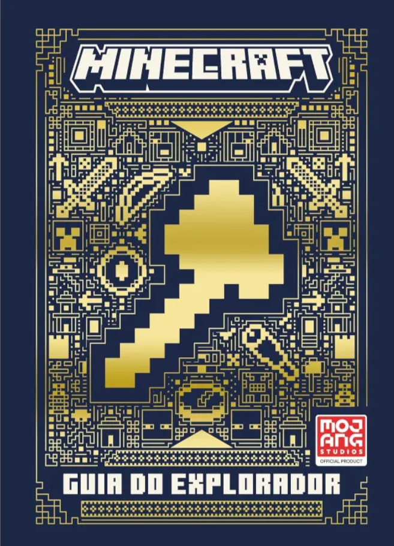
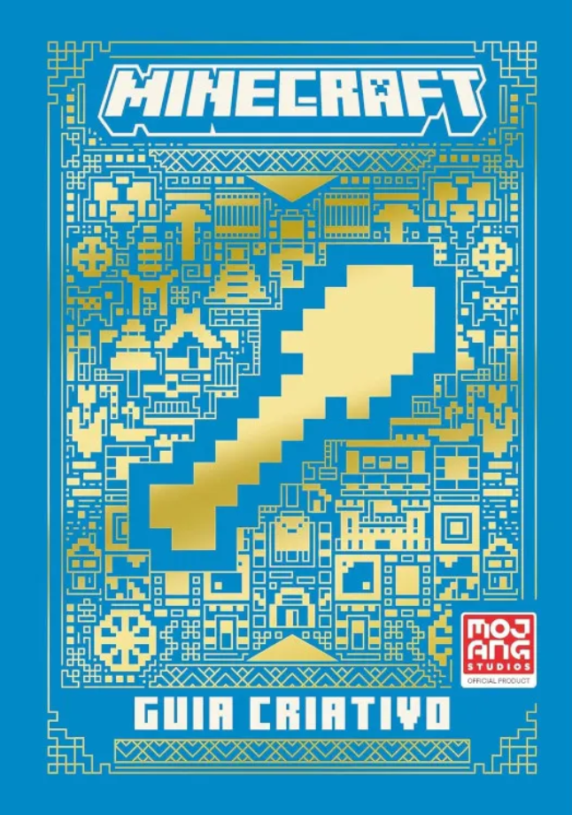
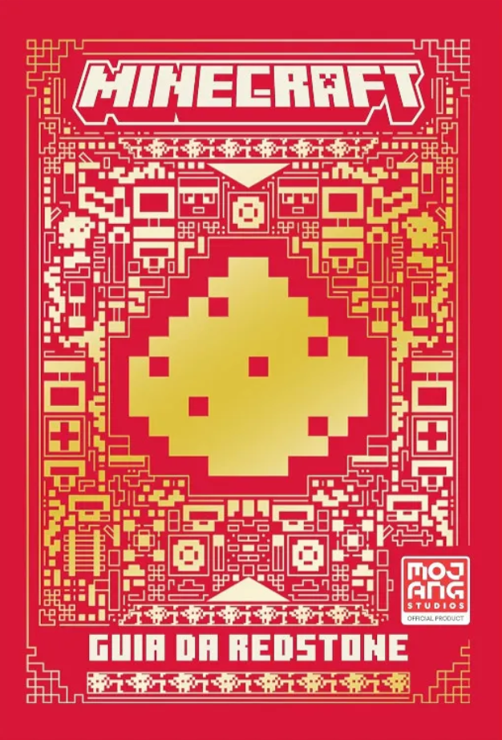
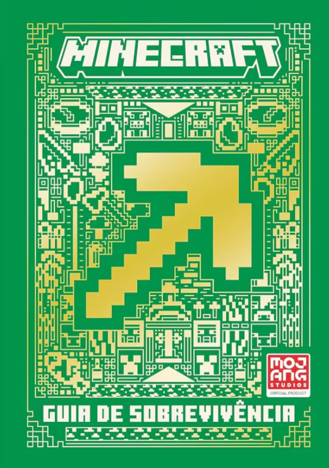
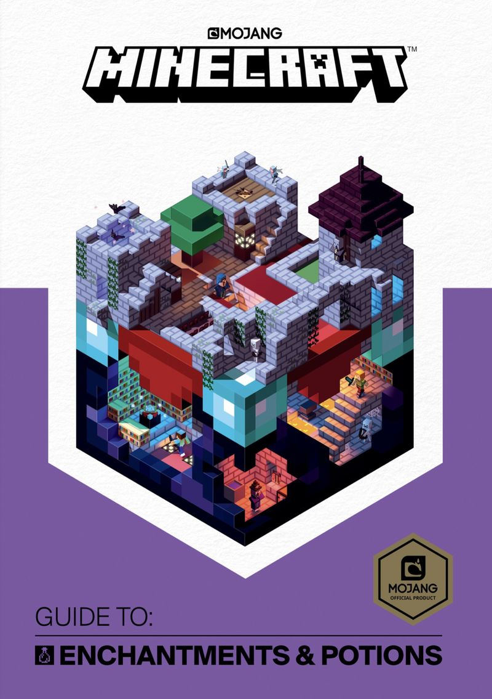

Bem-vindo!
Minecraft | Guia Do Explorador
Guia Do Explorador, Fornece informações ao jogador sobre como navegar pelos biomas, encontrar estruturas e itens dentro delas, bem como habilidades gerais de sobrevivência. , Capa Mole Em Português.
55,00
Bem-vindo!
Minecraft - Guia Criativo
Este Guia criativo irá oferecer todas as ferramentas necessárias para se tornar um construtor profissional.
41,90
Bem-vindo!
Minecraft | Guia da redstone
Guia Da Redstone, Fornece informações sobre componentes redstone, circuitos de redstone e mecanismos complexos. , Capa Mole Em Português.
57,90
Bem-vindo!
Minecraft | Guia de sobrevivência
Guia Do Explorador, Fornece informações sobre como encontrar recursos, criar e proteger-se de criaturas hostis. , Capa Mole Em Português.
55,00
Bem-vindo!

Minecraft | Guia de combate
Guia Do Combate, Fornece informações sobre como criar e encantar armas, como derrotar criaturas e estratégias para PVP. , Capa Mole Em Português.
55,00
Bem-vindo!
Minecraft | Guide to Enchantments & Potions
Guia Do Explorador, Guide to Enchantments & Potions, Capa Mole Em Português.
59,99